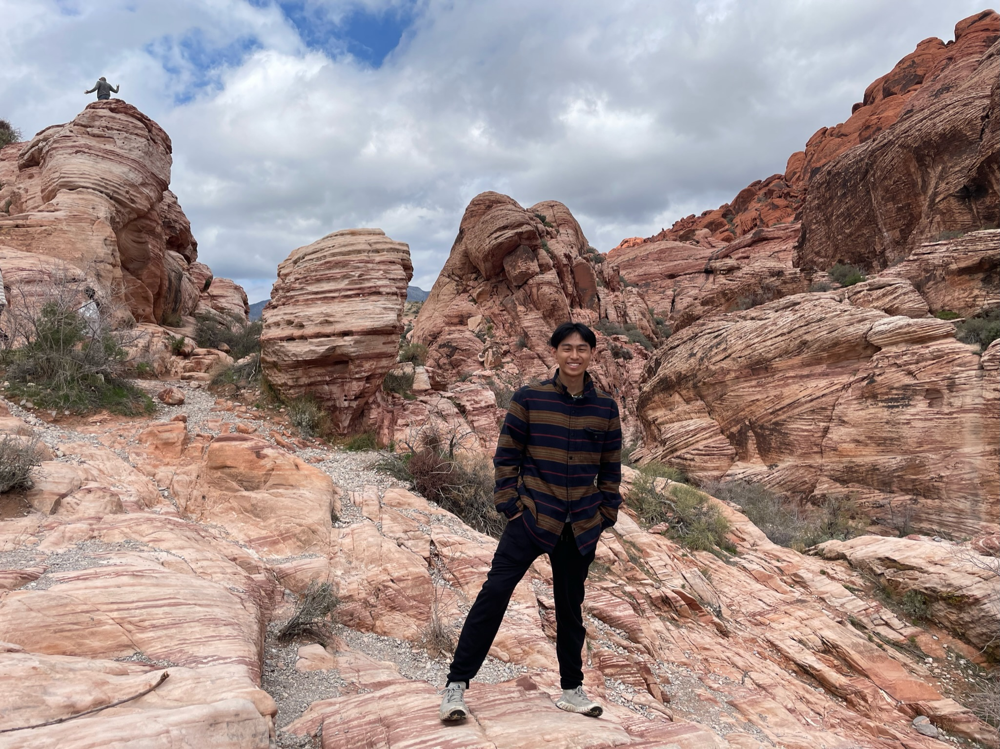

About Me

Hi There! I'm a senior studying computer science and neuroscience at Harvard University. This past summer, I had the incredible opportunity to work as a software engineer intern at Coinbase, where I expanded admin tooling for services handling millions in user assets and built financial aggregation APIs using Go and GraphQL. Previously, I worked at Zeta Surgical, a digital surgical startup focused on improving the accuracy, safety, and accessibility of image-guided procedures through navigation and robotics. My interest in medicine and technology began with investigating socioeconomic factors in Autism Spectrum Disorder diagnoses at Stanford's Wall Lab and continued with exploring AI biases in healthcare at UCSF's Bakar Computational Health Sciences Institute. Beyond medical applications, I'm passionate about exploring the intersection of technology and various fields, particularly fintech and neurotechnology. I believe innovative tools can address a wide range of current challenges across industries. At Harvard, I serve on the executive board for the Chinese Students Association and am a member of the Student Astronomers at Harvard-Radcliffe. Outside of work and school, you can find me hiking new trails, playing basketball with friends, or trying to learn new songs on the guitar. I'm always excited to connect with people who share similar interests in technology, healthcare, and innovation!